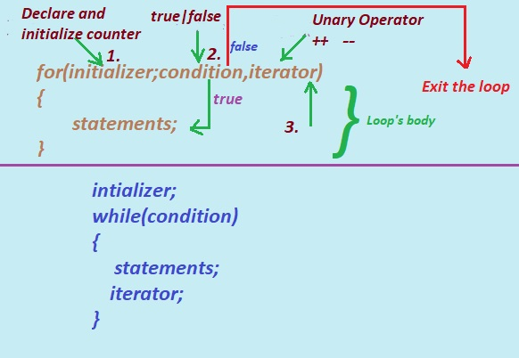

In this tutorial section we will learn what is difference between while , do while and for loop?
a. while loop: A while loop in C programming Language is used to repeatedly executes a statement as long as a given condition is true.
The while loop is also known as the Entry controlled loop because the test condition in the loop is checked first, and then the loop body will be executed. If the condition tested is false, the loop body will not be executed.
b. do.. while loop: The do..while loop in C Language is similar to the while loop with one difference. The body of do...while loop is executed at least once even if the condition mentioned in while is false.
The do..while loop is also known as the exit controlled loop because the statements inside the loop body is executed and then the condition is checked hence the loop is known to be as exit controlled loop.
c. for loop: The for loop in C language is a control structure that is used to run block of code or the statements multiple times.
Like while loop the for loop is also known as entry-controlled loop.
for loop in C programming is used to traverse array,linked-list ,string etc.
Unlike the do…while loop and while loop, the for loop contains the initialization, condition, and updating statements as part of its syntax.
In this tutorial section let study the differnce between while loop and for loop.
To study differrence between while and do while click here
Difference between while , do while and for loop in C Language in C Language

Given Diagram shows how for and while loop works.
for Loop:
1. Initializer: The initialization expression is executed, which is used to declare and initialize counter variables.
2. The Condition: The expression condition is tested returns true or false. If the expression is true, continue with step 3. Otherwise, the loop is finished.
3.The statements inside the body is executed.
4.Iterator: iterator the update expression (++,--) is executed, which increases or decreases the counter variable value i by 1.
5. Continue to the Back to Step 2.
Steps 2–5 are repeated as long as the condition is true.
1. While loop:
i.Initialization is always outside the loop.
ii.The condition may be an expression or non-zero value.
iii. It is normally used when the number of iterations is unknown.
iv.The increment can be done before or after the execution of the statement(s).
v.While loop is also entry controlled loop.
vi. It is used for complex initialization.
vii. Syntax:
while ( condition )
{
statement(s);
}
2. for loop:
i.Initialization may be either in the loop statement or outside the loop.
ii.Condition is a relational expression.
iii. It is normally used when the number of iterations is known.
iv.Once the statement(s) is executed then increment is done.
v. For loop is entry controlled loop.
vi. It is used when initialization and updation of conditions are simple.
vii. Syntax:
for ( init ; condition ; iteration )
{
statement(s);
}
C program to illustrate use for loop
/* C program given below demonstrate the for loop */
#include <stdio.h>
int main()
{
int i;
for (i = 0; i < 10; i++)
{
printf("\n%d, ", i);
}
return 0;
}
Output:
0 1 2 3 4 5 6 7 8 9
Explanation : The program above displays the numbers from 0 to 9.
Step 1: int i;
The variable i is declared as integer to store integer numbers.
Step 2: The control enters into the for loop.
for (i = 0; i < 10; i++)
{
printf("\n%d, ", i);
}
2.1 : intilize the variable i to 0 in intilization section of for loop. .i.e i=0
2.2 : control jumps to test the condition in the condition section , i<10 the condition tested is true i.e. 0<10 results in true, and executes the printf("%d, ",i);
display the output 0
Step 3: The process repeates till the value of i<10, And as soon as the value of i becomes 10, then execution of the loop terminates and stops the execution.
And finally shows the final output.
C program to illustrate use of while loop
/* C program given below demonstrate the use of while loop */
#include <stdio.h>
int main()
{
int count = 0;
while (count <10)
{
printf("%d ", count);
count++;
}
return 0;
}
Output:
0 1 2 3 4 5 6 7 8 9
The program above displays number in order between range 0 to 9
Explanation :
i. int count = 0;
The variable counter count is declared as int variable and assigned value 0. i.e count=0.
ii. control enters in to the while loop.
while (count <10)
tests the condition expression which is true (while(0<10)) then control enters into the while loop body.
iii. And executes
printf("%d ", count);
count++;
displays the value of count i.e. 0 on the output screen and increment(count++) the value of count by 1 then count becomes 1 , count=1.
This process continues till the value of count<10.
when the value of count becomes 10 (count=10)then
the condition while(count<10) becomes false and stop the execution of the loop.
Previous Topic:-->> break statement in C || Next topic:-->>Loops Assignments.